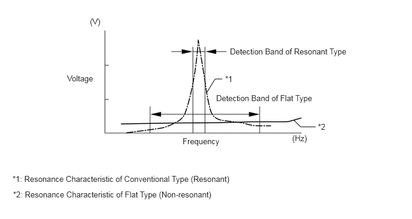
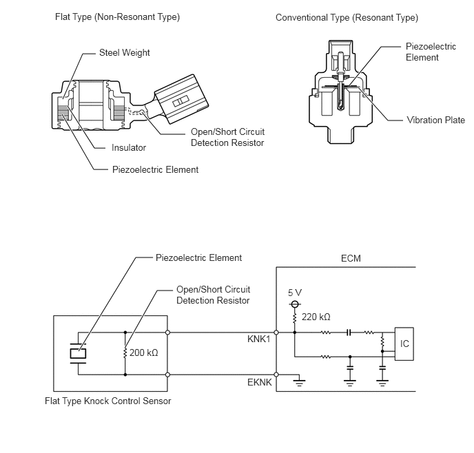
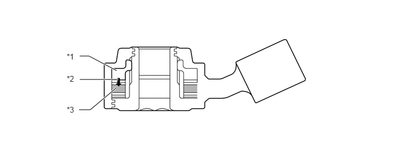

| Last Modified: 10-07-2025 | 6.11:8.1.0 | Doc ID: NM100000002GYB7 |
| Model Year Start: 2024 | Model: Tacoma | Prod Date Range: [12/2023 - ] |
| Title: T24A-FTS (ENGINE CONTROL): SFI SYSTEM (for Gasoline Model): KNOCK CONTROL SENSOR; 2024 - 2026 MY Tacoma [12/2023 - ] | ||
KNOCK CONTROL SENSOR
CONSTRUCTION
(a) In a conventional knock control sensor (resonant type), a vibration plate is built into the sensor. This plate has the same resonance point as the knocking* frequency of the cylinder block sub-assembly. This sensor can only detect vibrations in this frequency band.
*: The terms "knock" or "knocking" are used in this case to describe either preignition or detonation of the air fuel mixture in the combustion chamber. Preignition or detonation refers to the air fuel mixture being ignited earlier than is advantageous. This use of "knock" or "knocking" is not primarily used to refer to a loud mechanical noise that may be produced by an engine.
(b) A flat type knock control sensor (non-resonant type) has the ability to detect vibrations in a wider frequency band (from about 5 to 15 kHz) and has the following features:
- A flat type knock control sensor is installed to an engine by placing it over a stud bolt installed on the cylinder block sub-assembly. For this reason, a hole for the stud bolt exists in the center of the sensor.
- In the sensor, a steel weight is located in the upper portion. An insulator is located between the weight and a piezoelectric element.
- An open/short circuit detection resistor is integrated into the sensor.
(c) The engine knocking frequency will vary slightly depending on the engine speed. The flat type knock control sensor can detect vibrations even when the engine knocking frequency changes. Due to the use of the flat type knock control sensor, the vibration detection ability is increased compared to a conventional type knock control sensor, and more precise ignition timing control is possible.
(d) An open or short circuit detection resistor is integrated in the sensor. When the ignition switch is ON, the open circuit detection resistor in the knock control sensor and the resistor in the ECM keep the voltage at terminal KNK1 constant. An Integrated Circuit (IC) in the ECM constantly monitors the voltage of terminal KNK1. If an open or short circuit occurs between the knock control sensor and the ECM, the voltage of terminal KNK1 will change and the ECM will detect this and store a Diagnostic Trouble Code (DTC).
(e) Vibrations caused by knocking are transmitted to the steel weight. The inertia of this weight applies pressure to the piezoelectric element. This action generates electromotive force.
|
*1 |
Steel Weight |
*2 |
Inertia |
|
*3 |
Piezoelectric Element |
- |
- |